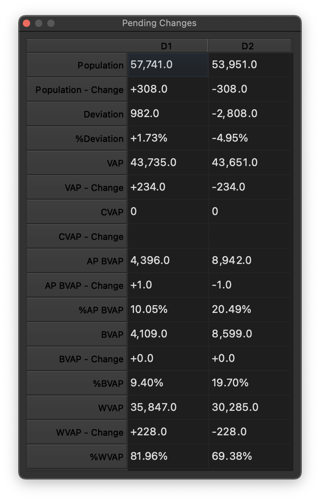

Pending Changes Window¶
As you assign geographic units to disticts, the Pending Changes window shows the impact of those pending but not yet saved changes on the affected districts. Although the district paint tool is the simplest means of visually assigning geogrphy to districts, the Pending Changes window will show the effect of unsaved changes in assignments no matter how they are made. This means you can use any of the tools available in QGIS to edit your plans, and the Pending Changes window will show you the effect of those changes on the population and demographics of the districts.
